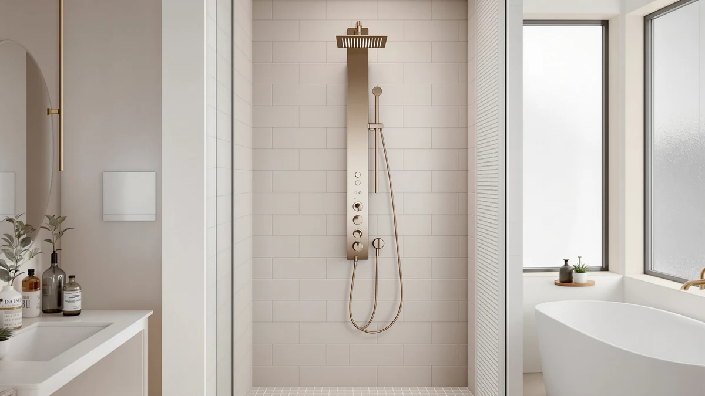

Durablesta Piano Key Thermostatic Shower Panel Review (2026): Worth It?
Prices and picks verified as of November 2026. Independent, reader-supported reviews.


Quick Answer
Our take: the Durablesta Piano Key Thermostatic Shower Panel is worth the $589.99 price if you want a thermostatic valve locked at 40°C (104°F), a battery-free LED display, and automatic ambient lighting in one tower. Its four-mode spray, including dual-height body jets, matches the layout of cheaper piano-key panels, but none of the alternatives below include the hydropower screen or the mood lighting. Buyers who care more about a rust-resistant stainless build than a tech display should compare it against Blue Ocean's towers first.
Our pick: Piano Key Thermostatic Shower Panel — $589.99 Check Price on Amazon
Bottom line: our top pick is the Piano Key Thermostatic Shower Panel with Ambient Light at $589.99.
Things to Know Before You Buy
- This Durablesta Piano Key Thermostatic Shower Panel review covers the $589.99 model with ambient lighting, not the brand's other piano-key panels.
- The thermostatic valve locks at 40°C (104°F), a scald-prevention feature shared with BEITH's cheaper $549.66 piano-key system.
- The LED display and ambient light run on water power alone, so they need no batteries but also only work while water is flowing.
- Four rotating modes split between a rainfall head, a waterfall setting, and dual-height body jets built for two different heights in the same household.
- The panel body is aluminum, lighter than the brushed stainless steel used on Blue Ocean's competing towers.
This Durablesta Piano Key Thermostatic Shower Panel review examines a $589.99 shower tower built around a battery-free LED display and automatic ambient lighting, the two features that set it apart from cheaper piano-key style panels. Durablesta markets it as a complete upgrade: a thermostatic valve that locks at 40°C (104°F), a water-powered screen that needs no batteries, and four rotating spray modes split between a rainfall head and dual-height body jets. We compared its listed specs and current price against three lower-cost alternatives, including two Blue Ocean stainless steel towers and a BEITH piano-key panel with a similar layout, to see whether the ambient lighting and battery-free electronics justify the extra cost.
For most buyers comparing piano-key shower towers, the Durablesta Piano Key Thermostatic Shower Panel earns its price mainly through the display, not through dramatically different plumbing performance. Its thermostatic valve and four-mode spray pattern compare closely with BEITH's $549.66 piano-key system, but the hydropower screen and automatic lighting are features neither BEITH nor Blue Ocean's stainless towers include. If you want scald protection and a showpiece display more than you want the toughest possible build material, the Durablesta is the pick worth the premium. If a rust-resistant stainless frame matters more than lighting, the Blue Ocean alternatives below deserve a look first.
Why You Should Trust Us
Ilane Tall covers home and bath fixtures for Best Shower Panels, and this Durablesta Piano Key Thermostatic Shower Panel review follows the same approach used across the site: no fake testing lab, no invented scores. We read Durablesta's own spec sheet, check the $589.99 price against the live Amazon listing, and compare its thermostatic valve, display, and spray modes against BEITH's and Blue Ocean's competing panels so you can see exactly where the extra cost goes. We earn a commission if you buy through our links, but that never changes which panel we recommend, and we call out the tradeoffs of the aluminum build even where they might cost a sale.
Our Research Experience
This Durablesta Piano Key Thermostatic Shower Panel review is built the way we evaluate every shower panel on this site: by comparing published specs, control layout, and price against the closest direct alternatives rather than inventing a lab score. The Durablesta pairs a thermostatic valve locked at 40°C (104°F) with a water-powered LED screen that displays temperature and shower duration, plus an ambient light that activates automatically once water starts flowing. We checked its $589.99 price against the live Amazon listing and lined up its four-mode spray pattern against BEITH's $549.66 piano-key system and Blue Ocean's two stainless steel towers, which cost $369.00 and $359.00. Reviewers of similar battery-free display panels consistently note that the screen dims or cuts out at low flow rates, a detail worth checking against your own home's water pressure before you buy. None of the four panels in this comparison has a published star rating or review count yet, so we weigh them on documented specs and pricing rather than owner feedback.
Overview & Specs

Piano Key Thermostatic Shower Panel
What we like
- Thermostatic valve locks at 40°C (104°F) to guard against sudden scalding water
- Water-powered LED display shows real-time temperature and shower duration without batteries
- Ambient light activates automatically once water starts flowing, so you never have to flip a separate switch
- Four rotating modes cover rainfall, waterfall, and dual-height body jets for two different heights
- Installs like other piano-key towers; the water-powered electronics don't require any extra wiring
Flaws but not dealbreakers
- At $589.99, it costs $40 to $230 more than the three alternatives covered in this review
- The LED display and ambient light only work while water is flowing, so they go dark between uses rather than staying lit as a standalone light
- Its aluminum panel body is lighter than the brushed stainless steel column on Blue Ocean's towers, trading some long-term dent resistance for lower weight
| Material | — |
| Size | One Size |
As this Durablesta Piano Key Thermostatic Shower Panel review found, the panel's main differentiator is the combination of its thermostatic valve and its hydropower electronics. The valve locks at 40°C (104°F) and holds that temperature through pressure fluctuations, the same scald-prevention approach BEITH uses on its $549.66 piano-key system. What BEITH doesn't include is the LED screen, which draws power entirely from the water flow to display temperature and shower duration in real time, and the ambient light that switches on automatically once water starts moving through the panel.
The spray side covers four rotating modes: a wide rainfall head, a waterfall setting, and dual-height body jets positioned for two people of different heights in the same household. That layout matches what BEITH's system offers at a lower price, so the extra $40.33 over the BEITH panel buys the display and lighting rather than additional spray functions. Compared with Blue Ocean's $369.00 and $359.00 stainless steel towers, which skip the screen and lighting entirely, the Durablesta is the tech-forward option in this lineup, not the most durable one, since its aluminum body is lighter than brushed stainless and more prone to showing dents over years of use.
What We Liked
In this Durablesta Piano Key Thermostatic Shower Panel review, the water-powered display stood out as the most distinctive feature. It shows temperature and shower duration without a single battery to replace, and the ambient light that comes on automatically with water flow gives the panel a showpiece quality none of the three alternatives here attempt to match. The thermostatic valve locking at 40°C (104°F) is a useful safety feature for households with kids or older family members, and it does the same job as BEITH's cheaper system without asking you to give up the display. The four-mode spray, including dual-height body jets, means two people with different heights can each get a properly aimed jet without adjusting the panel between uses.
What Could Be Better
The clearest downside in this Durablesta Piano Key Thermostatic Shower Panel review is the price gap. At $589.99, it costs $40.33 more than BEITH's similarly specced piano-key system and well over $200 more than either Blue Ocean stainless tower, and that premium buys electronics rather than a tougher build. The LED screen and ambient light depend entirely on water flow, so they offer no function when the shower is off, unlike a battery-powered or hardwired display that could stay lit as a standalone fixture. The aluminum panel body is also lighter than the brushed stainless steel used on Blue Ocean's towers, which likely means less resistance to dents and scratches over years of daily use in a damp bathroom.
Who Is It For?
This Durablesta Piano Key Thermostatic Shower Panel review points to a specific buyer: someone who wants a tech-forward shower tower with scald protection and is willing to pay a premium for a battery-free display and automatic lighting. It suits households with young kids or older adults who benefit from a valve that locks at 40°C (104°F), and anyone who wants their shower panel to feel like an upgrade beyond basic plumbing. It's a weaker fit for buyers who prioritize long-term build durability over electronics, since Blue Ocean's brushed stainless steel towers hold up to moisture better than this panel's aluminum body. It's also not the right choice for anyone trying to stay close to the $350 to $370 range, since the BEITH and Blue Ocean alternatives below cover similar spray functions for considerably less.
Alternatives to Consider
This Durablesta Piano Key Thermostatic Shower Panel review also covers three alternatives priced well under the Durablesta's $589.99, each worth weighing if the display and ambient light matter less to you than price or build material.

Also Great
Thermostatic Shower System Upgraded 6
Priced $40.33 less than the Durablesta, this BEITH piano-key system matches its four-mode spray and 40°C thermostatic valve closely, but skips the hydropower LED display and ambient light entirely.
$549.66
Check Price on Amazon
Also Great
Blue Ocean 63" Stainless Steel
At $369.00, this brushed stainless steel tower trades the Durablesta's display and lighting for a more rust-resistant build and a lower price, a reasonable swap if durability matters more to you than screens.
$369.00
Check Price on Amazon
Best Value
Blue Ocean 65” Stainless Steel
The lowest price in this comparison at $359.00, this taller 65" stainless tower covers rainfall, body jets, and a handheld head without the Durablesta's electronics, making it the straightforward budget pick here.
$359.00
Check Price on AmazonFrequently Asked Questions
Is the Durablesta Piano Key Thermostatic Shower Panel worth the $589.99 price?
It depends on how much you value the battery-free LED display and automatic ambient light. Those two features justify most of the premium over BEITH's $549.66 piano-key system, since the spray modes and thermostatic valve are otherwise close matches between the two panels.
Does the Durablesta panel's LED display need batteries?
No. The screen and the ambient light both run on power generated by the water flowing through the panel, so they need no batteries and no wiring, but they also only function while water is running.
How does the Durablesta compare with Blue Ocean's stainless steel shower towers?
Blue Ocean's 63" and 65" towers, at $369.00 and $359.00, use brushed stainless steel that resists moisture damage better than the Durablesta's aluminum body, but neither includes a display or ambient lighting. The choice comes down to whether you want a tougher build or the Durablesta's tech features.
Final Verdict
This Durablesta Piano Key Thermostatic Shower Panel review comes down to a tradeoff between electronics and build material. The Durablesta has a thermostatic valve locked at 40°C (104°F), a battery-free LED display, automatic ambient lighting, and four spray modes including dual-height body jets, all for $589.99. It's the right pick for buyers who want that display and lighting and don't mind an aluminum body instead of stainless steel. Step down to BEITH's $549.66 system only if you want the same spray layout without the screen, or to Blue Ocean's $369.00 or $359.00 stainless towers if a rust-resistant build matters more to you than lighting. For shoppers specifically drawn to a tech-forward piano-key panel, Durablesta remains the more distinctive choice in this lineup.